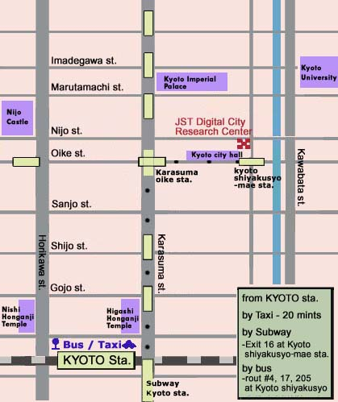
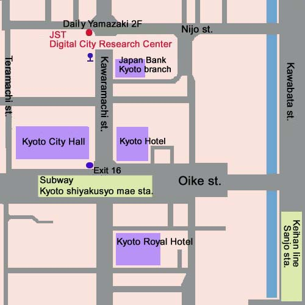

Acccess to JST Digital City Research Center
Access from Kyoto station

Public Transportation Time Tables
Kyoto station -> Kyoto shiyakusyo-mae
Subway Karasuma line
for Kokusai kaikan
Change to Tozai line for Goryo, Daigo
at Karasuma oike station
Bus route #4
for Matsugasaki, Midorogaike
Bus route #17
for Kawaramachi, Shinrinshako
Bus route #205
for Shijo kawaramachi, Kitaoji bus terminal
Kyoto shiyakusyo-mae -> Kyoto station
Subway Tozai line
for Karasuma oike, Nijo
Change to Karasuma line for Takeda, Shintanabe, and Kintetsu Nara
at Karasuma oike station
Bus route #4
for Kyoto station
Bus route #17
for Kyoto station
Bus route #205
for Kyoto station
Digital City Research Center Neighborhood Map

Back to Access
Last updated: Jan. 23, 2001